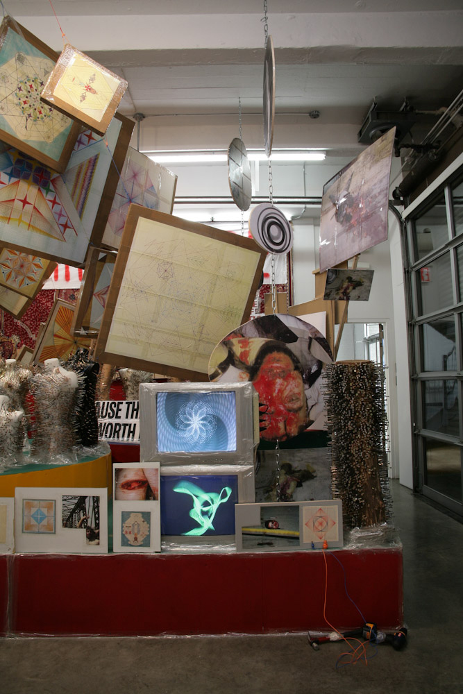

Colors significantly affect mood and behavior, and their influence varies based on context, culture, and individual perception. Leveraging colors effectively in design, branding, and environments can enhance experiences, evoke desired emotions, and improve mental well-being.
Choose Your Theme - Set Your Mood
Negative Effects of Mindless Scrolling
Understanding the psychological and emotional impacts
Engagement: Scrolling often emphasizes quick, surface-level interaction rather than fostering meaningful connections.

Emotional Exhaustion: Overexposure to negative or irrelevant content can drain emotional energy and leave users feeling fatigued.
Loss of Focus: Mindless scrolling contributes to reduced attention spans and difficulty in concentrating on purposeful tasks.
Disconnection from Values: Algorithms prioritize sensational content, leading users away from what aligns with their personal values.
Reduced Empathy: Divisive content can erode users' capacity for empathy and compassion.
Break free from mindless scrolling: Set boundaries, curate your feed, and embrace purposeful digital habits for a balanced life